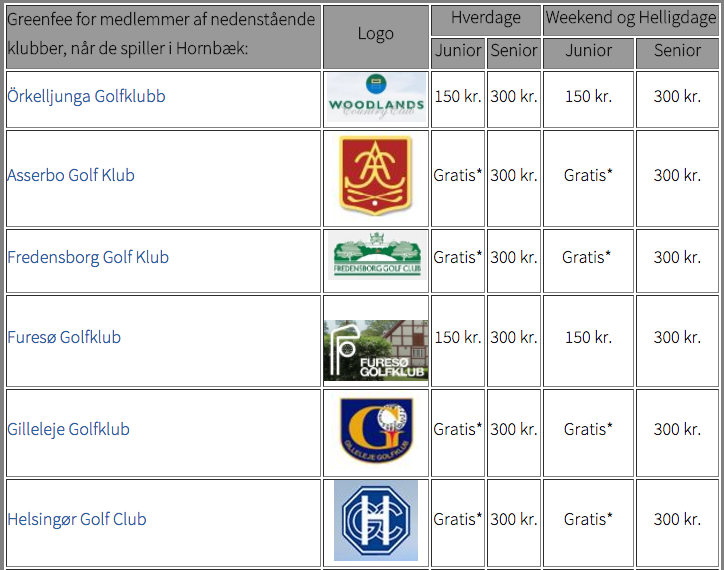
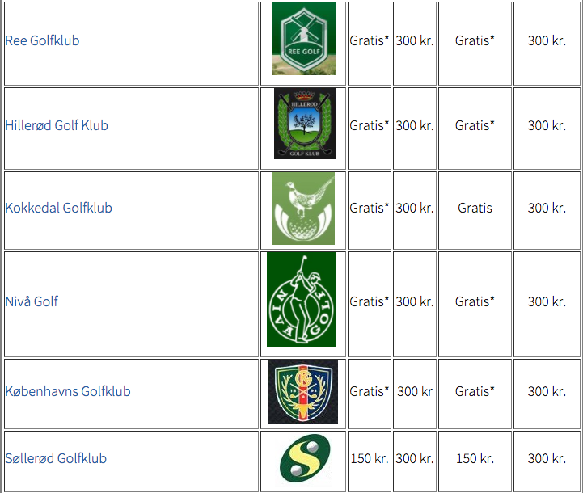
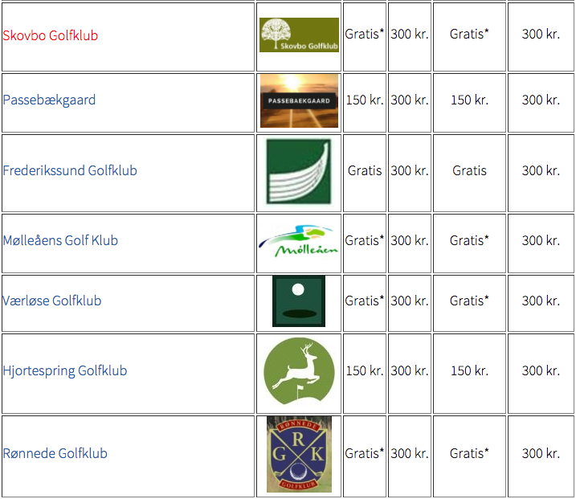
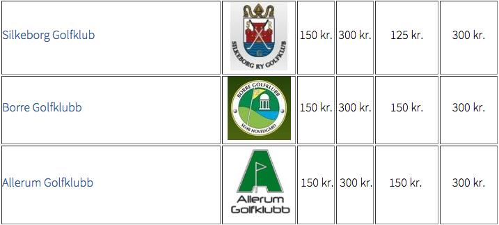

<div class="pages">
  <div data-page="venskabsklubber" class="page navbar-fixed toolbar-fixed" >
    <div class="navbar">
      <div class="navbar-inner">
        <div class="left">
          <a href="#" class="link back icon-only"><i class="icon icon-back"></i></a>
          <!-- <a href="#" class="back link icon-only"><i class="icon icon-back"></i></a> -->
        </div>
        <div class="center">Venskabsklubber</div>
        <!-- <div class="right"></div> -->
        <div class="right">
        </div>
      </div>
    </div>
    <div class="page-content" style="padding-top:45px;">
       <div class="content-block">
          <p>I henhold til en fælles aftale klubberne imellem er disse GreenFee priser alene gældende for klubbernes fuldtbetalende medlemmer - og altså ikke har et F-mærket DGU-kort. Venskabspriserne kan ikke kombineres med andre rabat-ordninger (f.eks. 4-for-3 m.v.)</p>
          <p>Vi har normatl samme pris hos os som vores venskabsklubber, men det er ikke altid tilfældet. Tjek priserne hos vores venskabsklubber for at sikre dig de korrekte priser. Furesø og Woodlands er eksempler.</p>
          <p>*) Juniorer, som spiller i bold med 1 betalende voksen, spiller gratis (max. 3 juniorer pr. voksen) - ellers betaler juniorer fra disse klubber 150 kr./150 kr. (hverdag/weekends)</p>
          <center></center>
          <br />
          <center></center>
          <center></center>
          <center></center>
          <center></center>
        </div>
    </div>
    </div>
    </div>
  </div>
</div>
